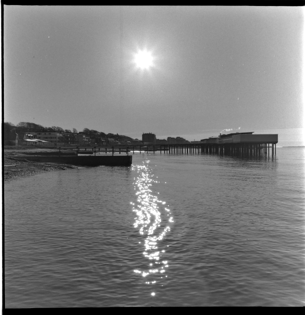
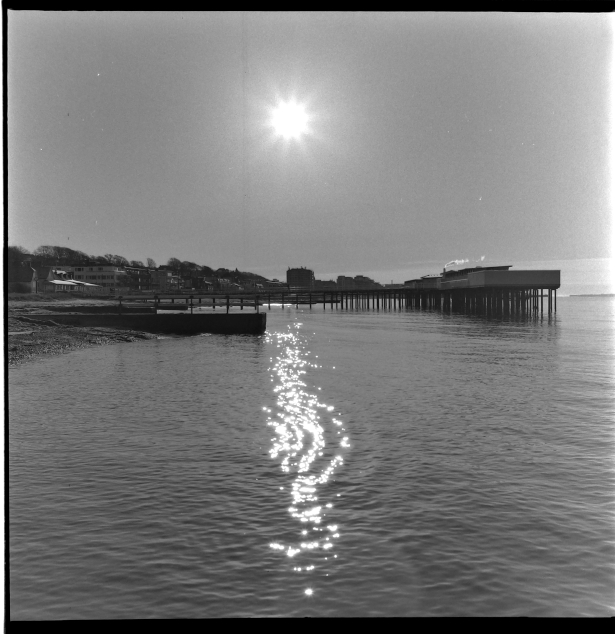

Om mig
Jag är professionell tryckare sedan 1990 med gedigen erfarenhet av avancerad tryckteknik och maskinhantering. Vid sidan om jobbet har jag fotografering och cykling som mina stora intressen.
Kompetenser
Offset & digitaltryck
Färgstyrning
Maskinunderhåll
Gimp
Fotografering & bildredigering
5S & kvalitet
Portfolio — utrustning & press
Inkjeten i Åstorp2022 och ett par bilder.

 

CV
Öppna mitt CV Ladda ner CV- Tryckare sedan 1990
- Erfarenhet av digital teknik, färgkontroll och maskinunderhåll
- Fotograf — Landskap och produkt